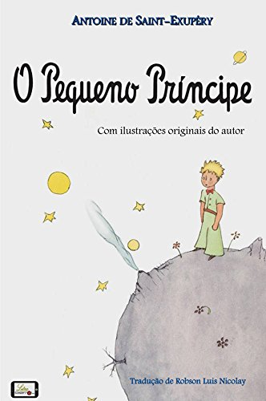

O Pequeno Principe
Antoine de Saint-Exupéry
Gênero: Literatura infantil, Novela, Fábula, Ficção especulativa
O Pequeno Príncipe é uma das obras mais amadas e reverenciadas da literatura mundial, escrita pelo renomado autor e aviador francês Antoine de Saint-Exupéry.
Publicado pela primeira vez em 1943, o livro é uma fábula poética que transcende gerações, conquistando leitores de todas as idades.
Esta resenha irá explorar os principais conceitos, a mensagem moral, a representação de cada personagem e um breve resumo sobre o autor, proporcionando uma visão mais profunda e compreensiva dessa obra atemporal.
Originalmente publicada em inglês e francês em abril de 1943
Conceitos e Mensagem Moral
Através de uma narrativa aparentemente simples, "O Pequeno Príncipe" aborda questões complexas e universais, como a natureza humana, a sociedade, a amizade e o amor.
O livro segue as aventuras do Pequeno Príncipe, um ser extraterrestre que viaja de planeta em planeta, encontrando uma série de personagens peculiares que representam diferentes facetas da humanidade.
A principal mensagem moral do livro é a importância de se enxergar com o coração, valorizando o que é essencial e verdadeiro.
O autor enfatiza que muitos adultos perderam a capacidade de compreender a simplicidade e a pureza do mundo, uma vez que estão preocupados com coisas materiais e superficiais. Através do olhar inocente do Pequeno Príncipe, Saint-Exupéry nos lembra da importância de cultivar a imaginação, a empatia e a sensibilidade para enxergar o que realmente importa na vida.
Representação de Cada Personagem
O Pequeno Príncipe:
Representa a pureza, a inocência e a sabedoria inata das crianças. Sua curiosidade e questionamentos levam o leitor a uma jornada de autorreflexão e descoberta do mundo.
Rosa:
Simboliza o amor, a fragilidade e a necessidade de cuidado. É a relação entre o Pequeno Príncipe e a Rosa que o ensina sobre o valor da dedicação e da responsabilidade.
O Rei:
Representa a sede de poder e controle. Seu desejo de ser obedecido por todos os súditos dos outros planetas ressalta a natureza autoritária e egocêntrica do ser humano.
O Homem Vaidoso:
Personifica a busca por elogios e reconhecimento externo. Sua incessante necessidade de admiração revela a fragilidade da autoestima baseada na opinião dos outros.
O Bêbado:
Simboliza o escapismo e a incapacidade de lidar com a realidade. O encontro com o bêbado faz o Pequeno Príncipe questionar o propósito e as motivações das ações humanas.
O Acendedor de Lampiões:
Representa a rotina e a falta de sentido em algumas atividades humanas. Sua repetição inútil de acender e apagar lampiões ressalta a necessidade de questionar a utilidade de nossas ações.
A Raposa:
Personifica a amizade e a importância dos laços afetivos. É através do vínculo com a Raposa que o Pequeno Príncipe aprende sobre o amor verdadeiro e a responsabilidade de cuidar daqueles que cativamos.
O Piloto(Narrador):
Embora não seja um dos personagens encontrados pelo Pequeno Príncipe, o piloto que narra a história é uma figura essencial, pois é ele quem transmite ao leitor as lições aprendidas com o encontro com o jovem príncipe.
O Pequeno Príncipe - Filme 2015
Resumo sobre o Autor
Antoine de Saint-Exupéry nasceu em 29 de junho de 1900, em Lyon, França. Além de escritor, ele foi um piloto de avião, o que influenciou significativamente sua obra literária. Durante sua carreira como aviador, ele enfrentou inúmeros desafios e aventuras, o que lhe conferiu uma perspectiva única sobre a vida e a sociedade.
Infelizmente, Saint-Exupéry teve um fim trágico, desaparecendo em 31 de julho de 1944, durante uma missão de reconhecimento aéreo durante a Segunda Guerra Mundial."O Pequeno Príncipe" é considerada sua obra-prima e seu legado mais duradouro. Através dela, Saint-Exupéry imortalizou suas reflexões sobre a essência humana e a importância de valores intangíveis como amor, amizade e empatia.
Em suma, O Pequeno Príncipe é muito mais do que um simples conto infantil; é uma narrativa profunda e filosófica sobre a condição humana e suas complexidades. Ao explorar os conceitos, a mensagem moral e a representação de cada personagem, Antoine de Saint-Exupéry nos presenteia com uma obra intemporal que continua a cativar leitores em todo o mundo, convidando-os a olhar para dentro de si mesmos e a valorizar as coisas mais importantes da vida. Através do olhar doce e sábio do Pequeno Príncipe, somos levados a refletir sobre nossas próprias escolhas, relações e perspectivas, tornando essa fábula um verdadeiro tesouro literário.
Click, Baixe e leia!